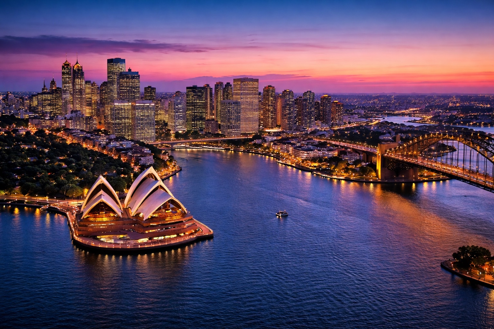
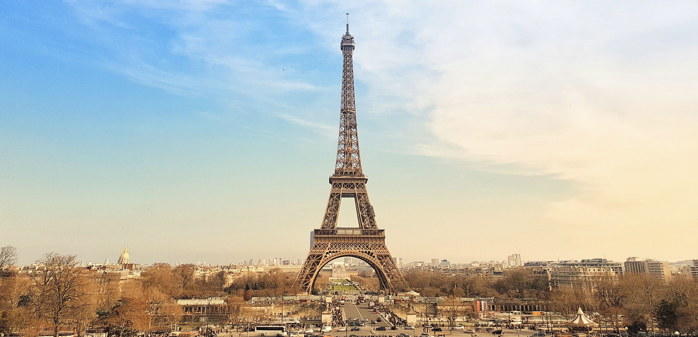

Conheça Paris:
Paris é um dos destinos mais icônicos do mundo, famosa por sua história, arte e charme incomparável. Conhecida como a Cidade Luz, encanta com sua arquitetura elegante, museus renomados e ruas cheias de vida. Cortada pelo Rio Sena, a cidade combina tradição e modernidade, oferecendo experiências únicas e inesquecíveis a cada visita.
Descubra 3 lugares imperdíveis em Paris:
1. Museu Do Louvre

O Museu do Louvre é um dos museus mais famosos e visitados do mundo. Localizado no centro de Paris, ele abriga milhares de obras de arte de diferentes épocas e culturas, incluindo a famosa Mona Lisa. O local impressiona tanto pelo seu acervo quanto pela sua arquitetura histórica, sendo uma visita indispensável para quem deseja conhecer a arte e a história da França.
2. Torre Eiffel
A Torre Eiffel é o principal símbolo de Paris e um dos monumentos mais conhecidos do mundo. Construída em 1889, ela oferece uma vista incrível da cidade, permitindo observar Paris de diferentes ângulos. Além de sua importância histórica, a torre encanta visitantes pela beleza e pela experiência única de estar em um dos pontos mais famosos do planeta.
3. Catedral de Notre-Dame

A Catedral de Notre-Dame é um dos maiores exemplos da arquitetura gótica francesa. Localizada às margens do Rio Sena, chama atenção por seus vitrais, esculturas e detalhes impressionantes. Além de sua beleza, a catedral possui grande importância histórica e cultural, sendo um dos locais mais visitados de Paris.